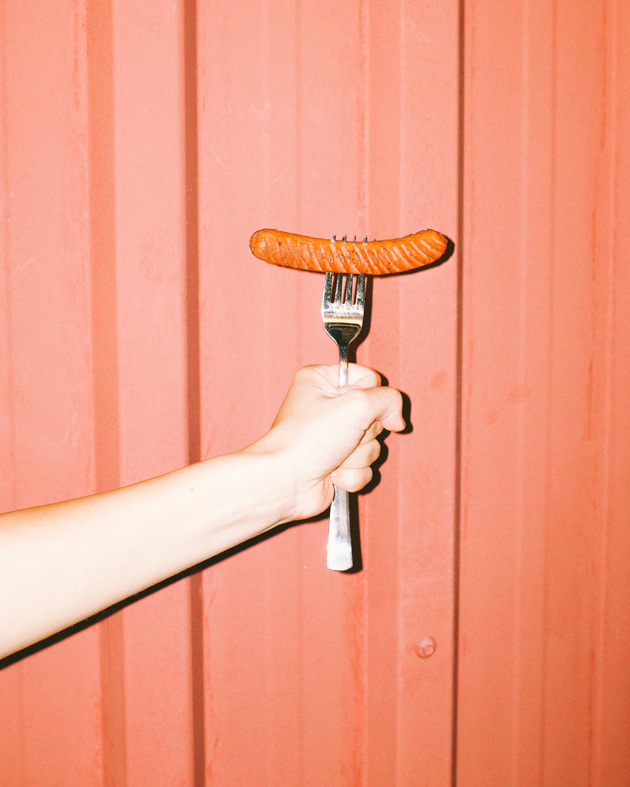

소시지는 작고 아담하지만 그속은 알차고 단단하다. 그저 지나가는 이들에게는 아무것도 아닌 소시지일수도 있지만 잠깐이라도 멈춰서 바라볼 수 있는 여유가 있는 사람에겐 다르게 보인다. 작은 소시지라고 여겨진 것은 사실 알찬 소시지임을 알게 된다.
이렇게 본다는 행위는 어쩌면 두가지로 나눠서 생각할 수 있다. 그 두가지의 차이는 시간이 들어가 있느냐 아니냐의 차이이다.